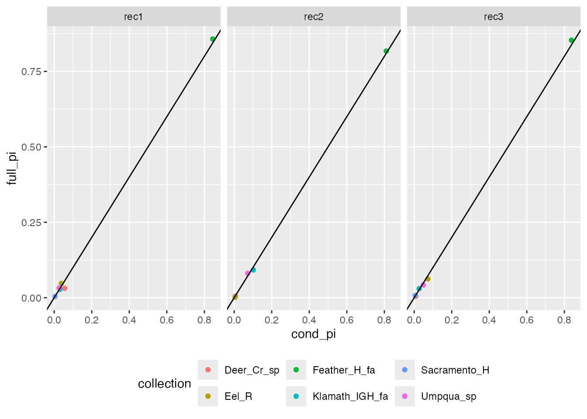
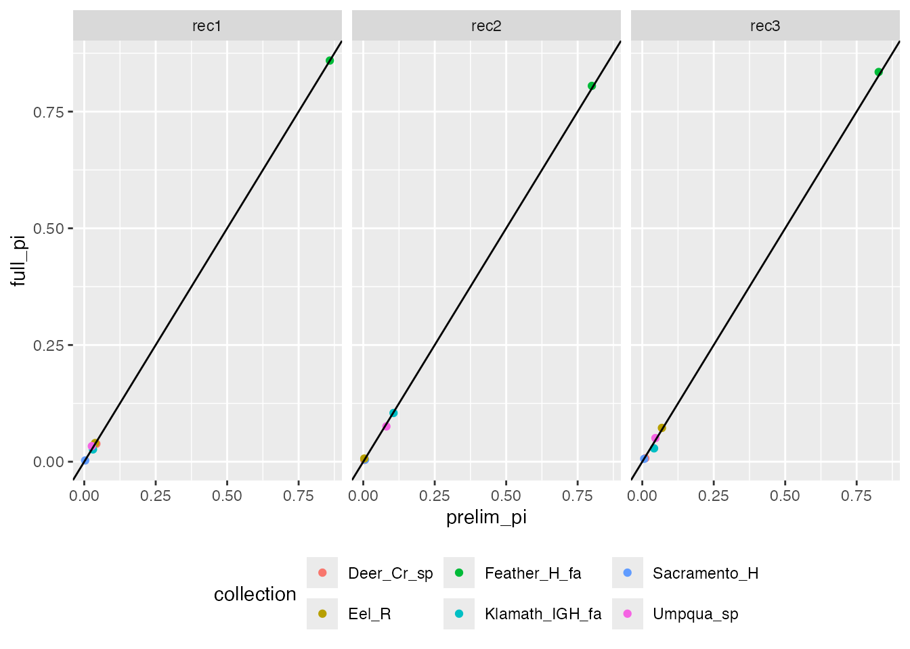

Using the Fully Bayesian Model in rubias
Ben Moran
6/3/2019
Source:vignettes/rubias-fully-bayesian.Rmd
rubias-fully-bayesian.RmdThe default model in rubias is a conditional model in
which inference is done with the baseline (reference) allele counts
fixed. The package now also includes a fully Bayesian GSI model, as is
implemented in the software packages BAYES and
cBayes, among others. This model differs from the
conditional model in two main respects:
- Individuals within the mixture that are allocated (on any particular step of the MCMC) to one of the reference samples have their genotypes added to that reference sample’s allele counts.
- These updated allele counts are used as Dirichlet parameters to explicitly draw an estimate of baseline allele frequecies, from which genotype likelihoods are calculated (in the conditional model, genotype likelihoods are pulled straight from the Dirichlet parameters using a Compound Dirichlet-Multinomial distribution).
Ideally, updating the reference allele counts with mixture genotypes will refine the estimate of allele frequencies in that sample. This is especially useful in cases where the reference dataset is small relative to the number of mixture individuals, as well as those in which the mixture contains populations not present in the baseline. However, the fully Bayesian model is much more computationally intensive, and can exhibit pathological behavior when reference collections are not well-differentiated.
Running the Model with Baseline Resampling
Load the required packages first:
##
## Attaching package: 'dplyr'## The following objects are masked from 'package:stats':
##
## filter, lag## The following objects are masked from 'package:base':
##
## intersect, setdiff, setequal, unionThe basic way to invoke the fully Bayesian model is to use the
infer_mixture function with the method option
set to “BR” (for “baseline resampling”). NOTE: We use
very few reps here to not take too much time when checking this package
for CRAN. You should use more…
full_model <- infer_mixture(
reference = small_chinook_ref,
mixture = small_chinook_mix,
gen_start_col = 5,
method = "BR",
reps = 100,
burn_in = 35
)## Collating data; compiling reference allele frequencies, etc. time: 0.11 seconds
## Computing reference locus specific means and variances for computing mixture z-scores time: 0.01 seconds
## Working on mixture collection: rec3 with 29 individuals
## calculating log-likelihoods of the mixture individuals. time: 0.00 seconds
## performing 100 sweeps of method "BR", 35 sweeps of which are burn-in. time: 0.03 seconds
## tidying output into a tibble.## Warning: The `x` argument of `as_tibble.matrix()` must have unique column names if
## `.name_repair` is omitted as of tibble 2.0.0.
## ℹ Using compatibility `.name_repair`.
## ℹ The deprecated feature was likely used in the rubias package.
## Please report the issue at <https://github.com/eriqande/rubias/issues>.
## This warning is displayed once every 8 hours.
## Call `lifecycle::last_lifecycle_warnings()` to see where this warning was
## generated.## time: 0.13 seconds
## Working on mixture collection: rec1 with 36 individuals
## calculating log-likelihoods of the mixture individuals. time: 0.00 seconds
## performing 100 sweeps of method "BR", 35 sweeps of which are burn-in. time: 0.03 seconds
## tidying output into a tibble. time: 0.10 seconds
## Working on mixture collection: rec2 with 35 individuals
## calculating log-likelihoods of the mixture individuals. time: 0.00 seconds
## performing 100 sweeps of method "BR", 35 sweeps of which are burn-in. time: 0.03 seconds
## tidying output into a tibble. time: 0.10 secondsNote that the output generated by “BR” is still a list of four tidy
data frames, but the bootstrapped_proportions data frame of
methods “MCMC” and “PB” is replaced with an
allele_frequencies data frame. This data frame contains the
posterior mean allele frequencies (theta) for each population, updated
based on the allocations of mixture individuals throughout MCMC. The
first three columns specify the mixture collection, locus and allele in
question, and all subsequent columns report the frequency for a
particular population.
full_model$allele_frequencies## # A tibble: 546 × 9
## mixture_collection locus allele Deer_Cr_sp Feather_H_fa Sacramento_H Eel_R
## <chr> <chr> <chr> <dbl> <dbl> <dbl> <dbl>
## 1 rec3 AldB1.… 2 0.836 0.916 0.900 0.937
## 2 rec3 AldB1.… 4 0.164 0.0840 0.100 0.0628
## 3 rec3 AldoB4… 1 0.0308 0.00180 0.00101 0.0478
## 4 rec3 AldoB4… 4 0.969 0.998 0.999 0.952
## 5 rec3 OTNAML… 1 0.225 0.209 0.455 0.247
## 6 rec3 OTNAML… 3 0.775 0.791 0.545 0.753
## 7 rec3 Ots_10… 2 0.105 0.101 0.127 0.650
## 8 rec3 Ots_10… 4 0.895 0.899 0.873 0.350
## 9 rec3 Ots_10… 2 0.542 0.545 0.425 0.901
## 10 rec3 Ots_10… 4 0.458 0.455 0.575 0.0994
## # ℹ 536 more rows
## # ℹ 2 more variables: Klamath_IGH_fa <dbl>, Umpqua_sp <dbl>Also note that the log-likelihoods and Z-scores included in the
indiv_posteriors output data frame are calculated using
only the reference allele counts prior to MCMC, and so do
not utilize the full model results.
Let’s compare the results of this to those from the conditional model:
set.seed(15)
cond_model <- infer_mixture(
reference = small_chinook_ref,
mixture = small_chinook_mix,
gen_start_col = 5,
method = "MCMC"
)## Collating data; compiling reference allele frequencies, etc. time: 0.10 seconds
## Computing reference locus specific means and variances for computing mixture z-scores time: 0.01 seconds
## Working on mixture collection: rec3 with 29 individuals
## calculating log-likelihoods of the mixture individuals. time: 0.00 seconds
## performing 2000 total sweeps, 100 of which are burn-in and will not be used in computing averages in method "MCMC" time: 0.02 seconds
## tidying output into a tibble. time: 0.01 seconds
## Working on mixture collection: rec1 with 36 individuals
## calculating log-likelihoods of the mixture individuals. time: 0.00 seconds
## performing 2000 total sweeps, 100 of which are burn-in and will not be used in computing averages in method "MCMC" time: 0.02 seconds
## tidying output into a tibble. time: 0.01 seconds
## Working on mixture collection: rec2 with 35 individuals
## calculating log-likelihoods of the mixture individuals. time: 0.00 seconds
## performing 2000 total sweeps, 100 of which are burn-in and will not be used in computing averages in method "MCMC" time: 0.02 seconds
## tidying output into a tibble. time: 0.01 seconds
comppi <- cond_model$mixing_proportions %>%
mutate(cond_pi = pi, full_pi = full_model$mixing_proportions$pi)
ggplot(comppi, aes(x = cond_pi, y = full_pi, colour = collection)) +
geom_point() +
geom_abline(slope = 1, intercept = 0) +
facet_wrap(~mixture_collection) +
theme(legend.position = "bottom")
The two methods are largely in agreement for this small test set.
Initializing Mixture Proportions with the Conditional Model
When collections are poorly resolved, the fully Bayesian model may
show pathological behaviors such as allocating all individuals to only
one of the closely related populations. One way to reduce this behavior
is to initialize the fully Bayesian model with the output from the
conditional model. rubias explicitly supports this through
the options prelim_reps and prelim_burn_in: if
changed from the NULL default, these parameters specify
conditional MCMC cycles to perform, the posterior mean mixing
proportions of which are used as the initial mixing proportion estimates
in the fully Bayesian model. For example:
set.seed(15)
prelim_full_model <- infer_mixture(
reference = small_chinook_ref,
mixture = small_chinook_mix,
gen_start_col = 5,
method = "BR",
reps = 100,
burn_in = 35,
prelim_reps = 100,
prelim_burn_in = 50,
)## Collating data; compiling reference allele frequencies, etc. time: 0.10 seconds
## Computing reference locus specific means and variances for computing mixture z-scores time: 0.01 seconds
## Working on mixture collection: rec3 with 29 individuals
## calculating log-likelihoods of the mixture individuals. time: 0.00 seconds
## performing 100 initial sweeps, 50 of which are burn-in and will not be used in computing averages to initialize starting point for method "BR". time: 0.00 seconds
## performing 100 sweeps of method "BR", 35 sweeps of which are burn-in. time: 0.03 seconds
## tidying output into a tibble. time: 0.10 seconds
## Working on mixture collection: rec1 with 36 individuals
## calculating log-likelihoods of the mixture individuals. time: 0.00 seconds
## performing 100 initial sweeps, 50 of which are burn-in and will not be used in computing averages to initialize starting point for method "BR". time: 0.00 seconds
## performing 100 sweeps of method "BR", 35 sweeps of which are burn-in. time: 0.03 seconds
## tidying output into a tibble. time: 0.10 seconds
## Working on mixture collection: rec2 with 35 individuals
## calculating log-likelihoods of the mixture individuals. time: 0.00 seconds
## performing 100 initial sweeps, 50 of which are burn-in and will not be used in computing averages to initialize starting point for method "BR". time: 0.00 seconds
## performing 100 sweeps of method "BR", 35 sweeps of which are burn-in. time: 0.03 seconds
## tidying output into a tibble. time: 0.10 seconds
prelimpi <- prelim_full_model$mix_prop_traces %>%
filter(sweep == 0) %>%
select(-sweep) %>%
mutate(prelim_pi = pi, full_pi = prelim_full_model$mixing_proportions$pi)
ggplot(prelimpi, aes(x = prelim_pi, y = full_pi, colour = collection)) +
geom_point() +
geom_abline(slope = 1, intercept = 0) +
facet_wrap(~mixture_collection) +
theme(legend.position = "bottom")
In this case, the results are largely identical to those from uniform initial proportions, potentially because the collections are well-resolved to begin with.
Managing Parallelization
To incorporate baseline updates while keeping runtimes reasonable,
genotype likelihood calculations in the fully Bayesian model are
parallelized using RcppParallel. By default,
RcppParallel runs one thread per core on your machine; to
check the number of cores available, use the detectCores()
function from package parallel. However, this default
behavior is dangerous on HPC systems, where a mismatch between the
number of cores requested by the user and the number of threads demanded
by RcppParallel might cause the job to abort. In these
cases, the number of threads should be manually set with
RcppParallel::setThreadOptions. For example, to set the
number of threads used to 1:
RcppParallel::setThreadOptions(numThreads = 1)Then you would run it just like before:
full_model <- infer_mixture(
reference = small_chinook_ref,
mixture = small_chinook_mix,
gen_start_col = 5,
method = "BR"
)This will slow things down relatively to using multiple cores.
To reset the threading options to utilize all available cores, just use:
RcppParallel::setThreadOptions(numThreads = RcppParallel::defaultNumThreads())